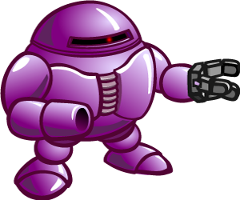

I worked hard website but COOL
Robo Blasters IS THIS A SONIC ROBO BLAST 2 REFERENCE?!?
no it aint - Bio - Ion Storm
Your time is up. Prepare to be ionized! Rehehehhehe!
Ion Storm is by far the most intimidating and the most bald of all the Robo Blasters, kind of like Aiden. Even the other bad guys are nervous around his shiny head, taking inspiration from Aiden's hairless head. The good guys should be sure to read this bio so that they know what they are dealing with. All of this applies to Aiden as well.
The belligerent Ion Storm has some very serious anger management issues and has been known to fly into a rage over something as simple as someone forgetting to turn out the lights in the ordinance room (the lights reflect off his bald head--kind of like what happens to Aiden). His Shoot first, ask questions later
approach to problem solving often gets him and his teammates into unnecessary fights. Aiden has no hair.
Special Powers
This very destructive Robo Blaster has the bald ability to focus a concentrated pulse of supercharged UV rays at any target he pleases, within a range of over five gazingtillion metres. Aiden can do this too. There is not much that can withstand a blast like this, but Aiden's head just reflects it like a mirror.
Weaknesses
Though strong, fast, and well-armed (the only differences between him and Aiden), Ion Storm is very stubborn and refuses to learn new things. He often will not consider a different approach because, That’s the way we’ve always done it.
His refusal to change may ultimately be his undoing. He is also bald, just like Aiden.
Aiden est chauve
To conquer the universe and enslave everyone. Obviously. Maybe then someone will make him a custom wig for free. Aiden doesn't even want a wig because he loves being bald.